The worst case: the employment agency sets us up, and sends us candidates in worst-to-best order, so we hire every single one.
We use probability theory to find an average-case running
time.
Probability basics.
We best the employment agency by shuffling their list of candidates, and seeing them in random order: we get a much lower average cost, as we shall prove.
When we randomize the algorithm we speak of an expected running time.
In the console below, type or paste:
!git clone https://gist.github.com/91e59d2a36937f9be17cee01ddb9588d.git
cd 91e59d2a36937f9be17cee01ddb9588d
from hire_assistant import *
n=18
hire_assistant(n,False)
Now you can experiment with the algorithm by changing the value of n and running hire_assistant(n,False)
(Note:
random variables are actually functions.)
X is an indicator variable for an event A if:
If X is an indicator variable for A, then
Exp[X] = Prob[X=1] = Prob[A happens]
.
This easily follows from the definition:
Exp[X] = 1 * Prob[X=1] + 0 * Prob[X=0] = Prob[X=1] = Prob[A happens]
Example:
We throw a fair die 100 times What is the expected number
of times we get 1 or 6?
Let Xi be the indicator variable of the event "in
ith throw we got 1 or 6".
Then notice that the number of times we get 1 or 6 is:
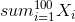
and we want the expectation of this. By linearity of expectations:

and by the indicator variable properties:
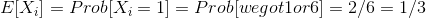
To summarize:
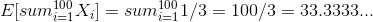
So we expect to get 1 or 6 about 33.33 times.
The first candidate we always hire. The second candidate will
be better half the time, the third one will be better than the
first two one third of the time, and so on, so we get the
series:
1 + 1/2 + 1/3 + 1/4...
(Or y = 1/x.)
So:
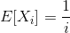
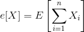
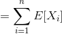
(By linearity of expectations.)
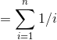
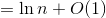
Why is the last step true?
Video here.
Basically, the anti-derivative of 1/x is ln x:

And what is that O(1) about?
It means that the sum - ln n is always bounded by a constant.

Probability that two people have the same birthday: 1/365
To generalize the problem, and see it doesn't just apply to
birthdays, let's call the # of days in the year n.
Let's set up an indicator random variable so that
Xij is:
1 if persons i and j have the same birthday.
0 if the don't.
Let X count the number of pairs of people who
have the same birthday.
k is the number of people in the room.
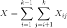
Take expectations and apply linearity of expectation:
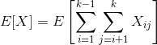
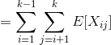
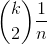
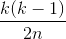
So we are looking at Θ(n1/2),
asymptotically speaking.